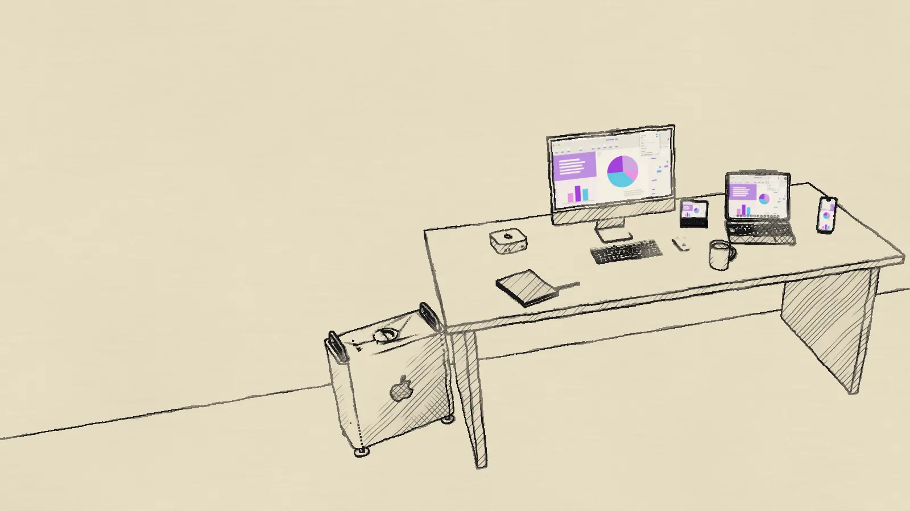
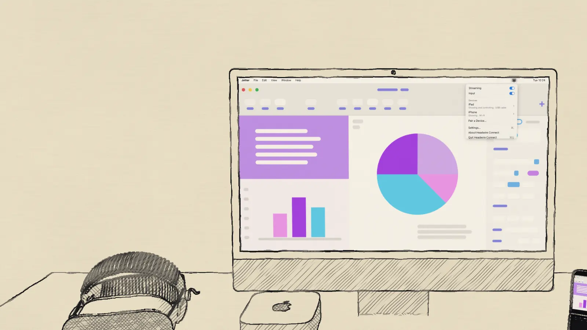
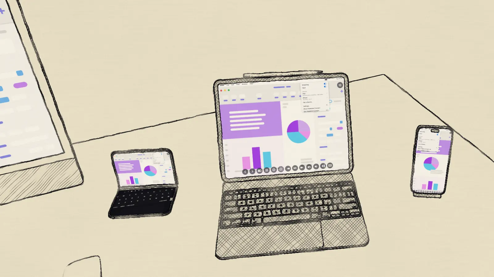
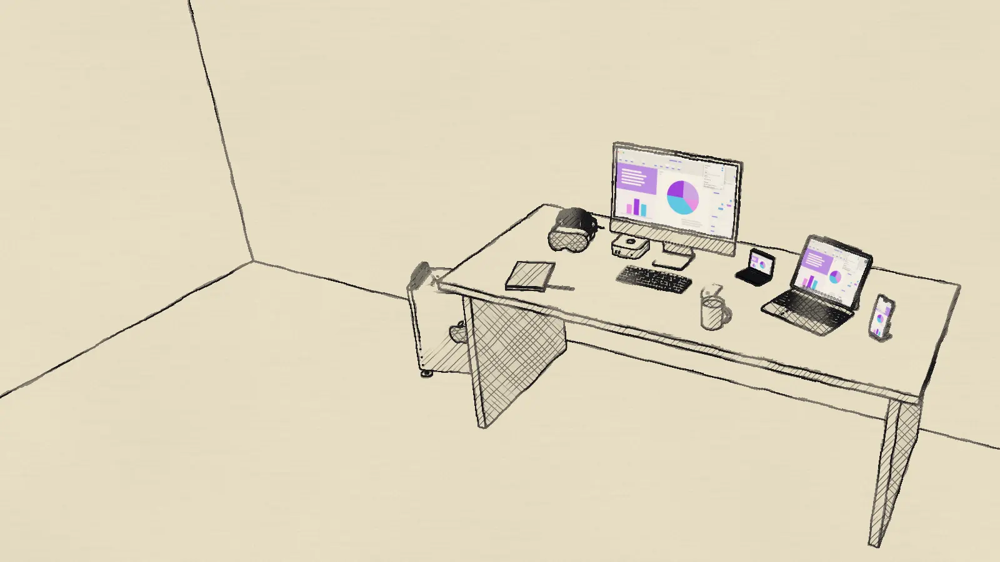

For iPad and iPhone
Your Mac, on your iPad.
Headwire shows the Mac in the room on your iPad or iPhone, plays its sound, and lets you work it with touch, a trackpad, a mouse or a keyboard.
Scroll to walk across the desk.

For iPad and iPhone
Headwire shows the Mac in the room on your iPad or iPhone, plays its sound, and lets you work it with touch, a trackpad, a mouse or a keyboard.
Scroll to walk across the desk.

On your Mac
On your Mac, install Headwire Connect. It sends what’s on the screen, and the sound, to your iPad or iPhone over a USB cable, your network or peer-to-peer Wi-Fi. Its menu is in the menu bar when you need it.

On your iPad and iPhone
Your iPad and iPhone show the Mac edge to edge. Tap where you want to click or move the pointer as on a trackpad, type on any keyboard, and swipe for Mission Control.

Two ways to connect
A capture card and Bluetooth need nothing installed on the Mac. Headwire Connect works by cable or wirelessly, with the most features. Use either, or both.